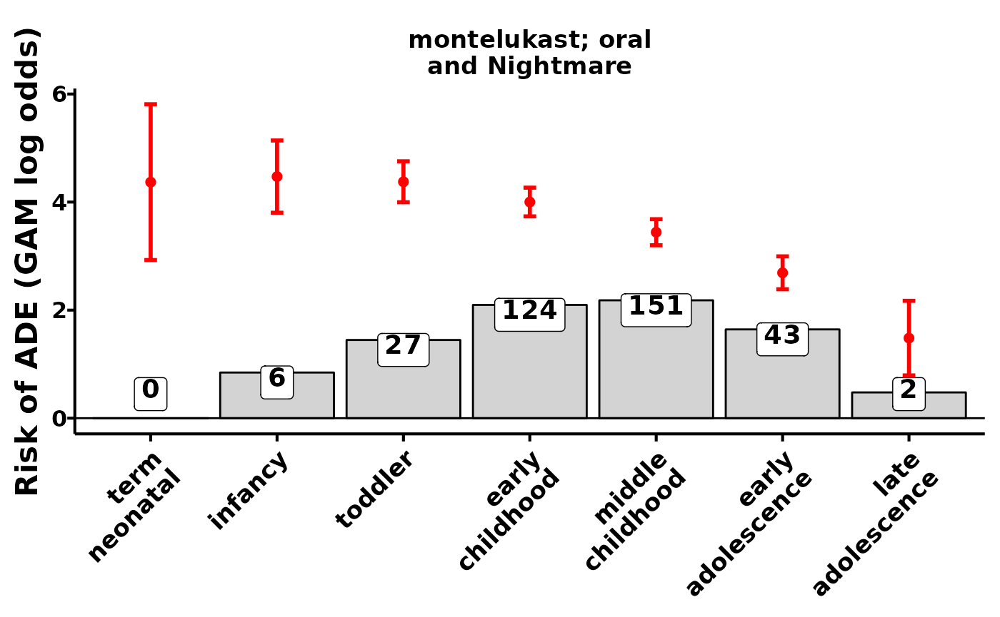

PDSdatabase
The main thesis behind this published resource is that children have adverse events after drug exposure not just from the disease process but also from the biological processes from their growth and development. The National Institute of Child and Human Development defines 7 stages of child development for which we estimate signals: term neonate (0-27 days), infancy (28 days-1 years), toddler (1 year-2 years), early childhood (2-5 years), middle childhood (6-11 years), early adolescence 12-17 years, and late adolescence (18-21 years). The database contains tables of drug safety signals with drug, adverse event, and biological ontologies to facilitate teasing apart influences and contributions adverse drug events during childhood.
An example
The package helps with identifying, retrieving, and loading the database.
Retrieve the database:
library(PDSdatabase)
download_sqlite_db() #downloads to current working directoryConnect to the database:
con <- connect_sqlite_db()Do something:
pacman::p_load(tidyverse,DBI)
drug_ <- "montelukast; oral"
event_ <- "Nightmare"
theme_big <-
theme_classic(base_size=16) +
theme(
strip.text = element_text(color="black",face="bold"),
strip.background = element_blank(),
axis.title.x = element_blank(),
axis.line = element_blank(),
axis.ticks = element_blank(),
axis.text.x = element_text(color="black",face="bold",
angle=45,vjust=1,hjust=1),
axis.text.y = element_blank(),
axis.title.y = element_text(color="black",face="bold"),
legend.position = "top",
legend.text = element_text(color="black",face="bold"),
legend.key.size = unit(0.4,"cm"),
legend.box.margin = margin(-0.4,-0.4,0,-0.4,unit = "cm")
)
stages <-
c("term_neonatal","infancy",
"toddler","early_childhood",
"middle_childhood","early_adolescence",
"late_adolescence")
stages_split <- str_replace(stages,"_","\n")
plot_ade_risks <- function(x,color="red",theme=theme_big,ts=5){
x$nichd_split <- str_replace(x$nichd,"_","\n")
x$NICHD = factor(x$nichd_split,levels=str_replace(stages,"_","\n"))
x %>%
ggplot(aes(factor(nichd_split,levels=stages_split),gam_score,group=ade)) +
geom_bar(stat="identity",aes(y=log10(as.numeric(DE)+1)),fill="lightgray",color="black") +
ggrepel::geom_label_repel(
aes(
label=DE,
y=log10(as.numeric(DE)+1)
),
vjust=1.3,fontface="bold",size=ts) +
geom_point(color=color,size=2) +
geom_errorbar(aes(ymin=gam_score_90mse,ymax=gam_score_90pse),
width=0.1,color=color,size=1) +
geom_hline(yintercept = 0,color="black",size=0.5) +
facet_wrap(~ade_name,labeller = label_wrap_gen(width = 20)) +
xlab("") +
ylab("Risk of ADE (GAM log odds)") +
theme +
theme(
axis.line = element_line(),
axis.ticks = element_line(),
axis.text.y = element_text(color="black",face="bold",size=12)
)
}
tbl(con,"ade_nichd") %>%
filter(ade_name==paste0(drug_," and ",event_)) %>%
collect() %>%
plot_ade_risks()
The labelled numbers are the number of observed drug reports with the adverse event. The red bars and intervals are the estimated signal of the drug exposure’s effect on the occurrence of an adverse event at that child development stage. In this context, risk and signal estimate are synonymous - we use a risk model to generate drug safety signals.
Disconnect database:
disconnect_sqlite_db(con)There is so much that can be done with this and the other data found in this database. Stay tuned for more vignettes!